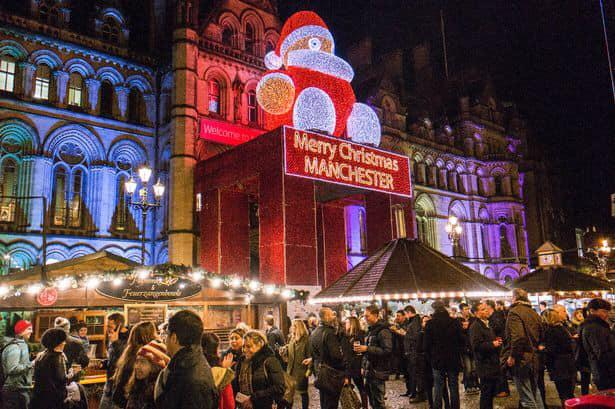

This is our market, here we will sell festive items allowing us to get ready for the christmas spirit. The Market wil open at 9:00am and last untill 11am, allowing you to purchase or win any product you want.Manchester's Christmas Markets have been attracting thousands of visitors to the city centre every year since 1998 and have become a fixture of Manchester's Yuletide celebrations. Dates have yet to be confirmed for this year's markets, but they usually arrive in the city in early November and run until a few days before Christmas.Dogs are not allowed at the Albert Square market apart from assistance dogs. The enclosed space is just too busy and crowded, which isn't a very suitable environment for dogs. You can bring your dog to the other markets though, as they're not fenced areas, but it's probably best to leave them at home while you visit the Christmas Markets. Dogs are also not allowed in any of the bars at any of the market sites
